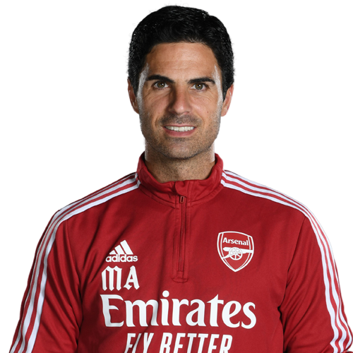

Arsenal Football Club is a professional football club based in Islington, London, England. Arsenal compete in the top flight of English football, the Premier League. While Arsenal have enjoyed success in the past, recent years have proven to be difficult for the club.
The club was founded in October of 1886 by munitions workers at the Royal Arsenal in Woolrich. After their stadium was destroyed in 1913, the club moved to Arsenal Stadium in Highbury. 93 years later Arsenal moved its operations to the Emirates Stadium in Highbury House, London.
Mikel Arteta was born on March 26, 1982 in San Sebastián, Spain. He began his footballing career as a player for many different clubs, including a 6 year spell at Arsenal. After 25 years of playing, Arteta retired from playing and started his coaching career as an assistant to Manchester City's coach Pep Guardiola. After 4 years at Manchester City, Arteta took the offer to be Arsenals head coach in 2019. In Arteta's short spell as Arsenal manager he managed to win an FA Cup and an FA Community Shield.
